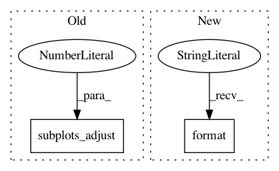

fdfb6689c9ce1c9fedddba7a4d03f1ba84c736a0,demo/draw_boundaries.py,,,#,14
Before Change
train_acc = model.evaluate(X, Y_cat, verbose=0)
plt.xlabel("train accuracy = %d%%" % (train_acc[1] * 100))
plt.subplots_adjust(0.02, 0.10, 0.98, 0.94, 0.45, 0.35)
plt.show()
After Change
train_acc = model.evaluate(X, Y_cat, verbose=0)
plt.xlabel("train accuracy = %d%%" % (train_acc[1] * 100))
save_fig("{}_{}".format(dataset,s))
plt.show()
In pattern: SUPERPATTERN
Frequency: 3
Non-data size: 2
Instances
Project Name: IBM/adversarial-robustness-toolbox
Commit Name: fdfb6689c9ce1c9fedddba7a4d03f1ba84c736a0
Time: 2017-07-04
Author: valentina.zantedeschi@ibm.com
File Name: demo/draw_boundaries.py
Class Name:
Method Name:
Project Name: stared/livelossplot
Commit Name: ae098dc6dbc8abfb8068723e13908424c706eb78
Time: 2018-11-27
Author: katarzyna.m.kanska@gmail.com
File Name: livelossplot/core.py
Class Name:
Method Name: draw_plot
Project Name: scikit-learn/scikit-learn
Commit Name: b4db36d337a4ff83f1bcb37c5a8c615d3134d372
Time: 2020-05-20
Author: jliu176@gmail.com
File Name: examples/covariance/plot_mahalanobis_distances.py
Class Name:
Method Name: